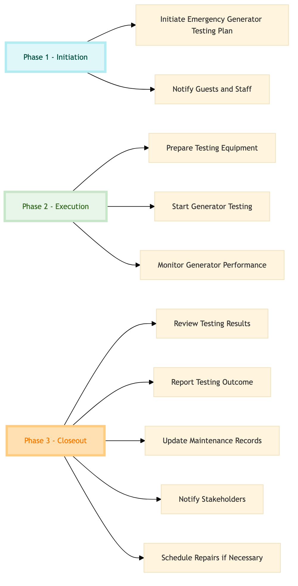

| Role | Steps |
|---|---|
| Facilities Manager | 1.1 3.1 3.2 3.3 3.4 3.5 |
| Front Desk Agent | 1.2 |
| Maintenance Technician | 2.1 2.2 2.3 |
| Step | Name | Role | System | Input | Output | KPI | Dec? | Exc? | Pain Point / Risk |
|---|---|---|---|---|---|---|---|---|---|
| 1.1 | Initiate Emergency Generator Testing Plan | Facilities Manager | Oracle OPERA Cloud | Testing schedule and checklist | Approved testing plan | Less than 30 minutes to initiate the plan | N | Y | Overlooking critical safety protocols during generator testing |
| 1.2 | Notify Guests and Staff | Front Desk Agent | Oracle OPERA Cloud | Approved testing plan | Guest notification log | Less than 10 minutes to notify all guests and staff | N | Y | Inaccurate or delayed communication leading to guest dissatisfaction |
| 2.1 | Prepare Testing Equipment | Maintenance Technician | Oracle OPERA Cloud | Testing plan | Prepared testing equipment list | Less than 15 minutes to prepare equipment | N | Y | Missing or faulty test equipment affecting the reliability of the test |
| 2.2 | Start Generator Testing | Maintenance Technician | Oracle OPERA Cloud | Prepared testing equipment list | Testing log | Less than 30 minutes to complete the initial test run | Y | Y | Generator failure during testing requiring immediate repair |
| 2.3 | Monitor Generator Performance | Maintenance Technician | Oracle OPERA Cloud | Testing log | Performance report | Less than 10 minutes to monitor performance post-test | Y | Y | Inadequate monitoring leading to undetected performance issues |
| 3.1 | Review Testing Results | Facilities Manager | Oracle OPERA Cloud | Performance report | Testing results summary | Less than 20 minutes to review results | Y | Y | Misinterpretation of test data leading to incorrect conclusions |
| 3.2 | Report Testing Outcome | Facilities Manager | Oracle OPERA Cloud | Testing results summary | Final report and action plan | Less than 15 minutes to compile the final report | N | Y | Lack of clear communication on test outcomes affecting future maintenance planning |
| 3.3 | Update Maintenance Records | Facilities Manager | Oracle OPERA Cloud | Final report and action plan | Updated maintenance records | Less than 10 minutes to update records | N | Y | Failure to update records leading to outdated maintenance data |
| 3.4 | Notify Stakeholders | Facilities Manager | Oracle OPERA Cloud | Updated maintenance records | Stakeholder notification log | Less than 10 minutes to notify all stakeholders | N | Y | Inadequate or delayed communication with stakeholders |
| 3.5 | Schedule Repairs if Necessary | Facilities Manager | Oracle OPERA Cloud | Final report and action plan | Repair schedule | Less than 10 minutes to schedule repairs | Y | Y | Delayed scheduling of repairs leading to prolonged generator downtime |
This process outlines the steps to test emergency generators at a full-service Marriott hotel using Oracle OPERA Cloud PMS and other key systems.